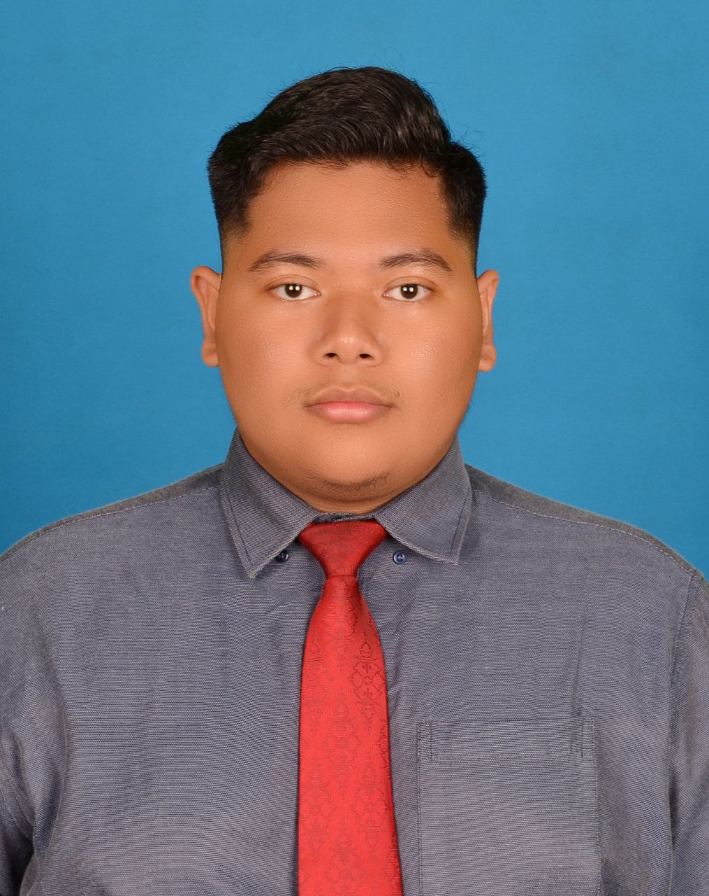
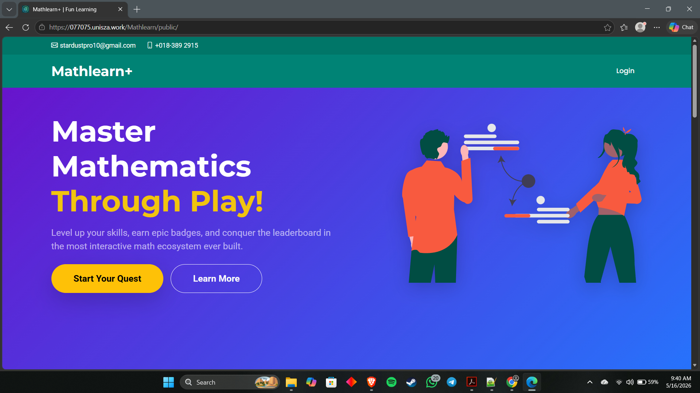

Software Developer (Security-Focused)
Bachelor of Computer Science (Internet Computing)
Universiti Sultan Zainal Abidin (UniSZA)
Job Responsibilities: As a security-focused software developer, the primary responsibility is to design, write, and test code while ensuring it is immune to vulnerabilities. This involves integrating security protocols during the software development lifecycle (SDLC), conducting code reviews, and patching potential exploits before deployment.
Relevance to Modern Cybersecurity: In today's digital landscape, network firewalls are no longer enough. Many modern cyberattacks target the application layer. By focusing on application security from the ground up, security-focused developers act as the first line of defense, preventing data breaches, SQL injections, and unauthorized access within the software itself.
Technical Skills:
Soft Skills:
Industry Requirements: The industry expects developers to have strong foundational programming, knowledge of OWASP Top 10 vulnerabilities, experience with secure authentication methods, and familiarity with automated security testing tools.
Gap Analysis: My current capabilities in full-stack web development (PHP, Laravel, MySQL) and Java provide a solid architectural foundation. I excel at building functional web systems. However, to fully bridge the gap to industry security standards, I need to expand my knowledge beyond rule-based algorithms to include formalized secure coding frameworks and advanced penetration testing techniques.
Consistently achieved Top Dean's List status for all semesters. Current metrics: GPA 3.92, CGPA 3.80.

Chosen Company: SNS Network
Why do I want to work for this company?
I am specifically targeting opportunities within the private sector, and SNS Network stands out as a premier technology provider. The company offers the exact technical job scope I am looking for, providing an environment where I can actively apply my web development and security skills on impactful, enterprise-level projects.
What value can I bring?
I bring a highly competitive spirit rooted in healthy competition. I strive to push myself and my team to deliver the best possible solutions, ensuring high standards in both code quality and security.
Why should SNS Network hire me?
You should hire me because I am exceptionally diligent and highly adaptable. The tech industry requires constant evolution, and I possess both the foundational technical knowledge to contribute immediately and the eagerness to learn new, complex technologies quickly to keep the company ahead of the curve.
What skills make me suitable for this job?
My proficiency in full-stack web development (PHP, Laravel, HTML, Java, and MySQL) combined with my hands-on exposure to network analysis tools (Wireshark, Autopsy) positions me perfectly to develop software that is both highly functional and structurally secure.
What are my strengths and weaknesses?
My greatest strengths are my soft skills: I am a very hardworking, articulate communicator who excels at following complex instructions. My primary weakness is that I am naturally introverted and quiet in new environments. However, I am actively stepping out of my comfort zone and working to become more vocal, proactive, and engaged in collaborative team settings.